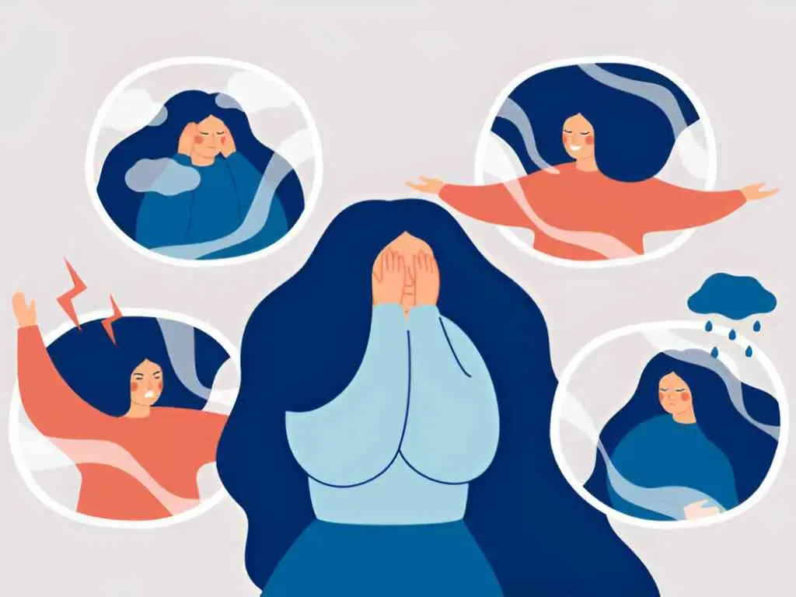

Anxiety is the most common aftermath of substance abuse, often accompanied by stress and depression as well. Anxiety disorder is one of the most commonly occurring conditions- about 30% people experience this condition once in their lifetime.
Most of the time, it manifests due to genetic or environmental conditions, but it can also occur due to a direct use of substances. This is known as Substance Induced Anxiety disorder. SIAD can be due to use of legal substances like alcohol, prescribed medications or caffeine or due to illegal substances like hallucinogens, stimulants, inhalants or cannabinoids.
What is Substance Induced Anxiety Disorder?
Very similar to anxiety disorder, the person feels anxiety like symptoms that are induced due to use of substances. One might find themselves feeling nervous, shaky and worried. These symptoms usually go away once the substances are consumed. When the effect of these substances wears off, the anxiousness sets in again.

This disorder is also referred to by different names. From the point of psychoeducation, they are included here-
- Drug induced anxiety disorder
- Medication induced anxiety disorder
- Toxin induced anxiety disorder
It is a medically recognized condition that is psychiatric in nature and requires intervention through experts. Around 0.002% of people with substance abuse conditions receive this diagnosis that is quite severe in nature.
Confirming my diagnosis with a psychiatrist for anxiety near me
When analyzing the symptoms, one can get confused with regular symptoms and the one with substance use. The symptoms- both physical and mental are listed here to prompt a quick response on your end to consult a good psychiatrist in delhi and pursue treatment.
Physical symptoms-
- Excessive sweating
- High heart rate
- Lightheadedness
- Hot flashes and cold chills
- Energy draining and fatigue
- Muscle tension
- Breathing issues
- Tightness in thoracic (chest) area
- Trembling or shaking
- Fainting spells

Psychological symptoms
- Excessive worry and nervousness
- Trouble in concentration
- Feeling of irritability
- Rumination on thoughts of dying
- Fear of losing control on oneself
- Constantly ruminating on a single idea
These factors can determine the intensity of the disorder i.e mild, moderate or severe. As a renowned psychiatrist in south delhi, we have seen cases that present with such conditions but are manageable only when given the right diagnosis. So, if your google bar is displaying ‘ ‘psychiatrist for anxiety near me’, this is the place to address your concerns.
There is an easy way to identify this substance induced anxiety.
- If the symptoms persist for one month without any unexplained substance misuse, then it is a different anxiety disorder.
- But, if the anxiety begins to set in once the person has started using a substance or is in his rehabilitation stage, then it is substance induced.
In case of drug induced anxiety the person suffers from-
- Lack of good sleep
- Eating issues and lowered digestion
- Talking incoherently
- Issues in abdominal area and chest area
- Sweaty and shaky
- Unable to organize their thoughts and convey them.
What substances cause SIAD?
There are different categories of substances that are responsible for the development of SIAD. They are listed here-
- Alcohol
- Cannabis (Marijuana)
- Hallucinogens (psilocybin, LSD etc.)
- Inhalants (gasoline, paint, whitener)
- Stimulants (cocaine, methamphetamines etc.)
- Opioids (heroin, prescription drugs )
Apart from these, there are other compounds that are capable of producing a similar response.
- Decongestants
- Corticosteroids
- Asthma medication
- Thyroid medication
- Anesthesia medication
It is important to talk to your healthcare provider before you start anxiety medication to clear out the risks of developing SIAD. If not, it could trigger an intense episode.
Dual Diagnosis at our rehab center
At our facility, we recognize the gruesome conditions that require recovery and are a part of its overall journey. Co-occuring conditions like substance induced anxiety disorders are quite common, and that is why we offer dual diagnosis programs. It is designed to tackle both substance abuse conditions and the underlying mental health condition concurrently.
Our team of experienced professionals at our rehabilitation center in Delhi uses an integrative and holistic approach to treatment. We interact and weave a treatment plan that utilizes the strength and motivation of the client themselves to make the treatment a successful endeavor.
Dual diagnosis is quite common, and under the expert guidance of Dr. Gorav Gupta, who is one of the best psychiatrists in Delhi, you’ll’ be able to find your road to recovery with the best treatment modalities available.
Treatment options for Substance Induced Anxiety Disorder
SIAD is a complex co-morbid condition that requires a comprehensive approach. The first step is a part of the rehabilitation process itself, i.e. detoxification that allows the body to get rid of the toxins and reduce its effects significantly.
The withdrawal that is induced by detoxification is intense and can be potentially severe. Once the client is able to handle this detoxification stage, further medication and counseling is provided.
Medication- healthcare providers will keenly assess all the symptoms and history and prescribe medications. They may offer sedatives like lorazepam (Ativan) or antidepressants like sertraline (zoloft). These medications can help minimize the effect of the condition and alleviate it over time as the co-morbid condition (substance abuse) improves.
Psychotherapy- Cognitive Behavioral; therapy has been proved to be a very effective method that aids recovery in SIAD. This method helps the clients understand how their anxiety develops and becomes aggressive due to their substance use and how they can mould their cognition to overcome this condition. Through therapy, they can learn healthier coping strategies to manage their anxiety without relying on addictive substances.
Seeking expert opinion? We’re here to help.
Conditions like SIAD are difficult to diagnose at first, and even manage when diagnosed. It takes a team of experts to analyze each and every aspect of this issue and work systematically on it. With our team under Dr. Gorav Gupta, one of the highly experienced psychiatrist in delhi we are sure to provide a highly personalized and custom tailored treatment plan that is designed according to our clients condition and needs. To know more, visit – goravgupta.com.